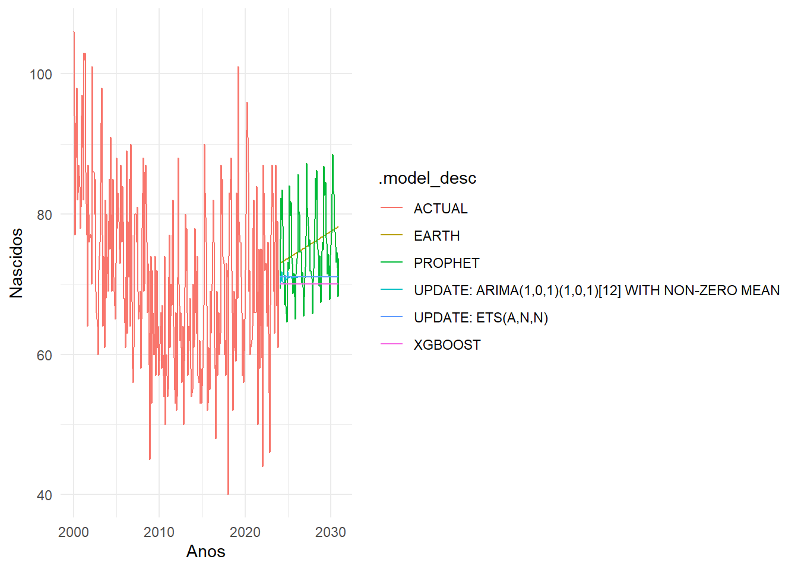
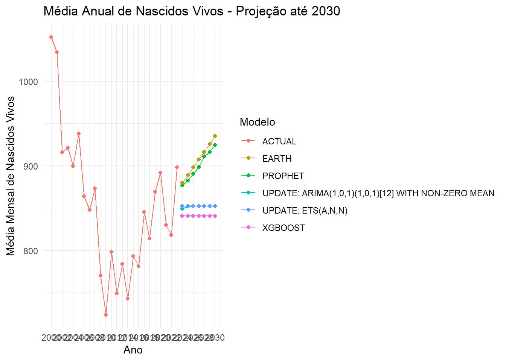
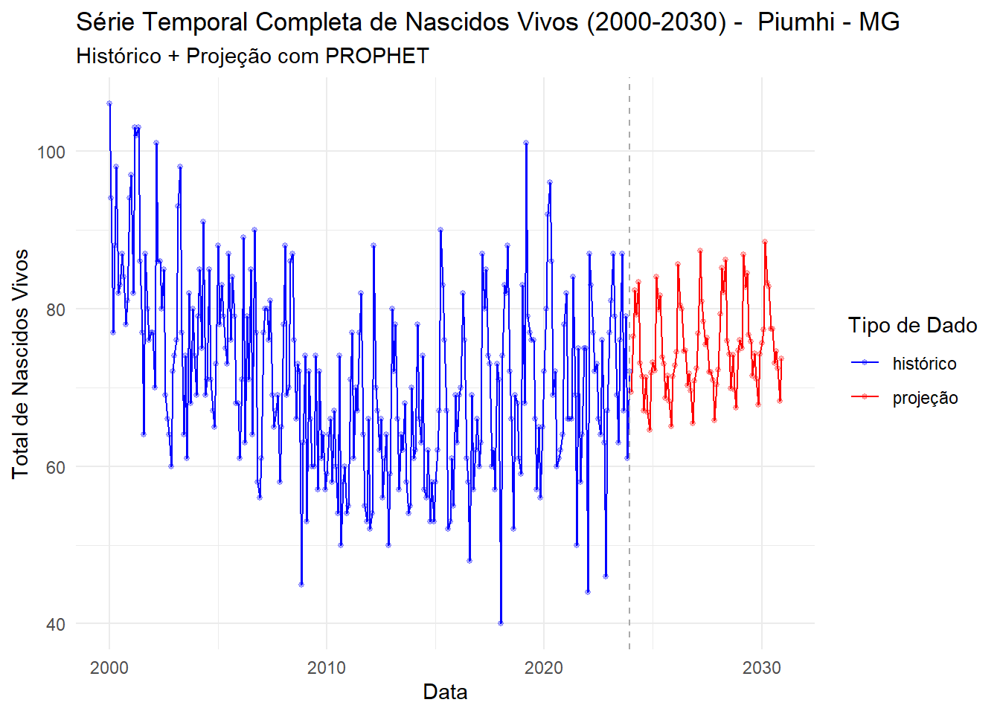
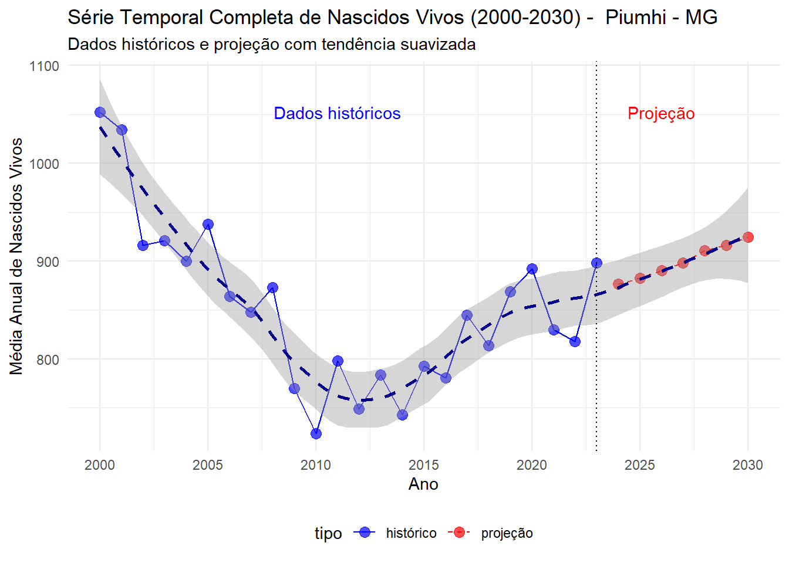

library(tidyverse)
library(modeltime)
library(lubridate)
library(timetk)
library(modeltime)
library(parsnip)
library(workflows)
library(recipes)
library(earth)
library(xgboost)
library(rsample)03_projecoes
1. Projeções de nascidos vivos
O objetivo deste documento é descrever procedimentos relacionados à projeção de nascidos vivos.
Vamos fazer para apenas uma região de saúde e depois automatizamos para as demais.
Lendo os dados gerados no script 1.
nascidos <-
vroom::vroom("~/GitHub/materno_infantil/01_dados/nascidos_regiao_saude.csv") |>
select(-`...1`)1.2. Região de saúde df_regiao (MG)
Acessando os dados apenas desta região de saúde.
Em sequência, faremos a divisão da base em treino e teste.
df_regiao <-
nascidos |>
filter(cod_regsaud == "31093")
splits <- time_series_split(
df_regiao,
date_var = data_nascimento,
assess = "2 years",
cumulative = TRUE)1.3. Rodando vários modelos
Instanciando diferentes modelos de projeção - Prophet, Arima, Exponential Smoothing, Regressão Adaptativa Multivariada e XGboost - e rodando todos.
receita <-
recipe(total ~ data_nascimento,
data = training(splits)) |>
step_timeseries_signature(data_nascimento)
modelo_arima <-
arima_reg() |>
set_engine("auto_arima") |>
fit(total ~ data_nascimento,
data = training(splits))
# 2. Prophet
modelo_prophet <-
prophet_reg() |>
set_engine("prophet") |>
fit(total ~ data_nascimento,
data = training(splits))
# 3. Regressão Exponencial
modelo_exp <-
exp_smoothing() |>
set_engine("ets") |>
fit(total ~ data_nascimento,
data = training(splits))
# 4. MARS (Regressão Adaptativa Multivariada)
modelo_mars <-
mars(mode = "regression") |>
set_engine("earth") |>
fit(total ~ data_nascimento,
data = training(splits))
# 5. XGBoost
modelo_xgboost <-
boost_tree(mode = "regression") |>
set_engine("xgboost") |>
fit(total ~ data_nascimento,
data = training(splits))
modelos <-
modeltime_table(
modelo_arima,
modelo_prophet,
modelo_exp,
modelo_mars,
modelo_xgboost)1.4. Avaliando a qualidade dos modelos
Avaliação dos resultados do modelos. O modelo do Prophet apresentou o menor mean absolute error (MAE). Guardamos ele para acessar no momento da geração de
calibracao <-
modelos |>
modeltime_calibrate(testing(splits))
tabela_precisao <-
calibracao |>
modeltime_accuracy() |>
arrange(mae)
# guardando modelo com o menor MAE
melhor_modelo <- tabela_precisao |>
slice_min(mae)
tabela_precisao# A tibble: 5 × 9
.model_id .model_desc .type mae mape mase smape rmse rsq
<int> <chr> <chr> <dbl> <dbl> <dbl> <dbl> <dbl> <dbl>
1 2 PROPHET Test 7.08 11.1 0.626 10.4 9.84 2.16e-1
2 3 ETS(M,N,A) Test 7.24 11.1 0.640 10.6 9.89 2.10e-1
3 5 XGBOOST Test 8.74 13.6 0.773 12.7 11.1 NA
4 1 ARIMA(1,1,3)(2,0,0)[12] Test 9.11 14.0 0.806 13.2 11.6 1.08e-4
5 4 EARTH Test 9.21 14.9 0.815 13.2 12.0 1.07e-2write.csv(tabela_precisao,
file = paste0("~/GitHub/materno_infantil/02_script/03_outputs_projecoes/metricas_previsoes/metricas_",
unique(df_regiao$cod_regsaud), ".csv"),
row.names = FALSE)Abaixo plotamos os gráficos que comparam os modelos visualmente, considerando base de treino e teste.
# Faz a previsão
previsao <- calibracao |>
modeltime_forecast(
new_data_nascimento = testing(splits),
actual_data_nascimento = df_nascidos)
teste <- testing(splits) |>
mutate(.model_id = 6,
.model_desc = "real",
.key = "actual") |>
rename(.index = data_nascimento,
.value = total) |>
select(.model_id, .model_desc,
.key, .index, .value)
previsao <- previsao |>
select(.model_id, .model_desc,
.key, .index, .value)
teste_previsto <- rbind(teste,
previsao)
# Visualiza a previsão
teste_previsto |>
plot_modeltime_forecast(
.legend_max_width = 250,
.conf_interval_show = FALSE,
.interactive = TRUE,
.title = "Comparação de Previsões de Nascidos Vivos")1.5. Unindo dados históricos e projeção
O próximo passo consiste em criar um dataframe que vai unir os dados reais com as projeções mensalmente.
# Obter a última data dos dados
ultima_data <- max(df_regiao$data_nascimento)
# Criar um dataframe com datas futuras até 2030
datas_futuras <- seq.Date(
from = as.Date(ultima_data) + months(1),
to = as.Date("2030-12-01"),
by = "month")
# Criar dataframe futuro
futuro <- tibble(data_nascimento = datas_futuras)
# Reajustar todos os modelos usando os dados completos (não apenas os dados de treinamento)
modelos_reajustados <- calibracao |>
modeltime_refit(data = df_regiao)
# Fazer a projeção até 2030
projecao_2030 <- modelos_reajustados |>
modeltime_forecast(
new_data = futuro,
actual_data = df_regiao)
# Visualizar a projeção até 2030 trazendo os dados históricos e todas as projecoes
projecao_2030 |>
ggplot(aes(x = .index, y = .value, col = .model_desc)) +
geom_line() + theme_minimal() +
xlab("Anos") + ylab("Nascidos")
O próximo bloco de código serve para projetar o total de nascidos usando uma visualização anual.
# Criar tabela com valores anuais (mais fácil de analisar)
projecao_anual <-
projecao_2030 |>
mutate(
ano = lubridate::year(.index),
mes = lubridate::month(.index)
) |>
group_by(.model_id,
.model_desc,
ano) |>
summarise(
total_nascidos = sum(.value,
na.rm = TRUE),
.groups = "drop")
# Visualizar projeção anual
projecao_anual |>
ggplot(aes(x = ano,
y = total_nascidos,
color = .model_desc)) +
geom_line() +
geom_point() +
labs(
title = "Média Anual de Nascidos Vivos - Projeção até 2030",
x = "Ano",
y = "Média Mensal de Nascidos Vivos",
color = "Modelo"
) +
theme_minimal() +
scale_x_continuous(breaks = seq(min(projecao_anual$ano),
2030,
by = 2))
# Tabela com os valores das projeções anuais
projecao_anual_wide <-
projecao_anual |>
filter(ano >= 2023) |> # Filtra apenas anos futuros
select(ano, .model_desc, total_nascidos) |>
tidyr::pivot_wider(
names_from = .model_desc,
values_from = total_nascidos
) |>
arrange(ano)
# Exportar para CSV (opcional)
# write.csv(projecao_anual_wide,
# "projecao_nascidos_2030.csv", row.names = FALSE)
# Salvar melhor modelo em objeto separado
melhor_modelo_id <-
tabela_precisao |>
slice_min(mae) |>
pull(.model_id)
projecao_melhor_modelo <- projecao_2030 |>
filter(.model_id == melhor_modelo_id)
# Visualizar apenas o melhor modelo
projecao_melhor_modelo |>
plot_modeltime_forecast(
.legend_max_width = 250,
.conf_interval_show = TRUE,
.interactive = TRUE,
.title = paste("Projeção até 2030 com o Melhor Modelo:",
melhor_modelo$.model_desc),
.x_lab = "Data",
.y_lab = "Total de Nascidos Vivos")1.6. Adicionando tudo a um único dataframe
O próximo passo consiste em adicionar tudo em um único dataframe, tanto os dados de treino quanto a projeção para a gente plotar gráficos.
# 1) Juntar dados reais e projeção em um único dataframe
# Preparar dados reais para combinar com projecao. Para isso, precisamos renomear algumas colunas da base original
dados_reais <-
df_regiao |>
select(data_nascimento, total) |>
rename(
.index = data_nascimento,
.value = total
) |>
mutate(
.model_id = 0,
.model_desc = "Dados Históricos",
.key = "actual",
tipo = "histórico"
)
# Adicionar coluna de tipo na projeção
projecao_com_tipo <-
projecao_2030 |>
mutate(tipo = case_when(
.key == "actual" ~ "histórico",
TRUE ~ "projeção"
))
# Combinar dados reais e projeção
serie_completa <-
bind_rows(
dados_reais,
projecao_com_tipo) |>
# Remover duplicatas potenciais na sobreposição
distinct(.index, .model_desc, .keep_all = TRUE) |>
mutate(cod_regsaude = unique(df_regiao$cod_regsaud),
.before = .index)
# 2) Plotar gráfico completo com dados reais e projeção
grafico_completo <-
serie_completa |>
filter(
# Manter apenas dados reais históricos e o melhor modelo
(.model_desc == "Dados Históricos" & tipo == "histórico") |
(.model_id == melhor_modelo_id & tipo == "projeção")
) |>
ggplot(aes(x = .index,
y = .value,
color = tipo)) +
geom_line() +
geom_point(alpha = 0.3, size = 1) +
labs(
title = paste("Série Temporal Completa de Nascidos Vivos (2000-2030) - ", unique(df_regiao$regiao_saude), "-",unique(df_regiao$uf_sigla)),
subtitle = paste("Histórico + Projeção com", melhor_modelo$.model_desc),
x = "Data",
y = "Total de Nascidos Vivos",
color = "Tipo de Dado"
) +
theme_minimal() +
scale_color_manual(values =
c("histórico" = "blue",
"projeção" = "red")) +
# Adicionando linha vertical no ponto de transição
geom_vline(xintercept = as.numeric(max(dados_reais$.index)),
linetype = "dashed", color = "darkgray")
print(grafico_completo)
write.csv(serie_completa,
file = paste0("~/GitHub/materno_infantil/02_script/03_outputs_projecoes/data/data_",
unique(serie_completa$cod_regsaude), ".csv"),
row.names = FALSE)
ggsave(filename = paste0("~/GitHub/materno_infantil/02_script/03_outputs_projecoes/plot_mensal/plot_mensal",
unique(serie_completa$cod_regsaude), ".jpeg"),
plot = grafico_completo,
width = 10,
height = 7,
dpi = 300)1.7. Acessando tendência anual
O próximo passo consiste em extrair a tendência anual da série temporal para fins de visualização.
# 3) Extrair tendência anual de toda a série temporal
# Calcular médias anuais
tendencia_anual <- serie_completa |>
mutate(
ano = lubridate::year(.index),
mes = lubridate::month(.index)
) |>
group_by(ano, tipo, .model_desc) |>
summarise(
total_nascidos = sum(.value, na.rm = TRUE),
n = n(),
.groups = "drop")
# Filtrar apenas dados históricos do melhor modelo
tendencia_filtrada <- tendencia_anual |>
filter(
(.model_desc == "Dados Históricos" &
tipo == "histórico") |
(.model_desc == melhor_modelo$.model_desc &
tipo == "projeção"))
# Aplicar suavização à tendência para extrair componente de longo prazo
# Criar uma série temporal contínua de 2000 a 2030
anos_completos <-
data.frame(
ano = 2000:2030
)
# Juntar com dados filtrados
tendencia_suavizada <-
tendencia_filtrada |>
select(ano, total_nascidos, tipo) |>
right_join(anos_completos, by = "ano") |>
arrange(ano)
# Aplicar suavização loess para extrair a tendência
modelo_tendencia <- loess(total_nascidos ~ ano,
data = tendencia_suavizada,
span = 0.5)
tendencia_suavizada$tendencia <-
predict(modelo_tendencia)
tendencia_suavizada$tendencia <-
round(tendencia_suavizada$tendencia)
# 4) Plotar apenas a tendência de toda a série temporal
grafico_tendencia <-
ggplot(tendencia_filtrada) +
# Dados originais
geom_point(aes(x = ano,
y = total_nascidos,
color = tipo), size = 3, alpha = 0.7) +
# Linha conectando pontos originais
geom_line(aes(x = ano, y = total_nascidos,
color = tipo,
linetype = tipo)) +
# Tendência suavizada
geom_smooth(data = tendencia_suavizada,
aes(x = ano, y = total_nascidos),
method = "loess", span = 0.5,
se = TRUE, color = "darkblue", linetype = "dashed") +
# Linha vertical no ponto de transição
geom_vline(xintercept = 2023, linetype = "dotted") +
# Anotação
annotate("text", x = 2011,
y = max(tendencia_filtrada$total_nascidos, na.rm = TRUE),
label = "Dados históricos",
color = "blue",
hjust = 0.5) +
annotate("text", x = 2026,
y = max(tendencia_filtrada$total_nascidos,
na.rm = TRUE),
label = "Projeção",
color = "red",
hjust = 0.5) +
# Estética
scale_color_manual(values = c("histórico" = "blue",
"projeção" = "red")) +
scale_linetype_manual(values = c("histórico" = "solid",
"projeção" = "dashed")) +
labs(
title = paste("Série Temporal Completa de Nascidos Vivos (2000-2030) - ", unique(df_regiao$regiao_saude), "-",unique(df_regiao$uf_sigla)),
subtitle = "Dados históricos e projeção com tendência suavizada",
x = "Ano",
y = "Média Anual de Nascidos Vivos"
) +
theme_minimal() +
theme(legend.position = "bottom") +
scale_x_continuous(breaks = seq(2000, 2030, by = 5))
grafico_tendencia
ggsave(filename = paste0("~/GitHub/materno_infantil/02_script/03_outputs_projecoes/plot_anual/plot_anual_",
unique(serie_completa$cod_regsaude), ".jpeg"),
plot = grafico_tendencia,
width = 10,
height = 7,
dpi = 300)1.8. Gerando uma tabela de tendência anual
# Tabela de tendência anual
tabela_tendencia <-
tendencia_filtrada |>
arrange(ano) |>
mutate(
total_nascidos = round(total_nascidos, 1)
) |>
select(ano, tipo, total_nascidos)
# Versão wide da tabela (mais fácil de ler)
tabela_tendencia_wide <-
tabela_tendencia |>
select(ano, tipo, total_nascidos) |>
tidyr::pivot_wider(
id_cols = ano,
names_from = tipo,
values_from = total_nascidos
) |>
arrange(ano)
# Imprimir tabela de tendência anual
print("Tendência Anual de Nascidos Vivos (2000-2030):")[1] "Tendência Anual de Nascidos Vivos (2000-2030):"print(tabela_tendencia_wide)# A tibble: 31 × 3
ano histórico projeção
<dbl> <dbl> <dbl>
1 2000 1052 NA
2 2001 1034 NA
3 2002 916 NA
4 2003 921 NA
5 2004 900 NA
6 2005 938 NA
7 2006 864 NA
8 2007 848 NA
9 2008 873 NA
10 2009 770 NA
# ℹ 21 more rows